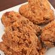

Fried Chicken

Description
Fried chicken is always the most delectable treat to have after a long day...
So there was this one day a few-- OK I won't do a spiel, but anyway, if you want to make it yourself, then follow these simple steps.
Ingredients
- Frying pan
- Chicken
- Flour
- buttermilk
- (Optional) Cornstarch
Steps
- A few hours before cooking, put chicken in buttermilk
- Douse chicken in Flour/cornstarch/seasoning mixture.
- Put chicken in frying pan, cook till temp of 165f in the middle.